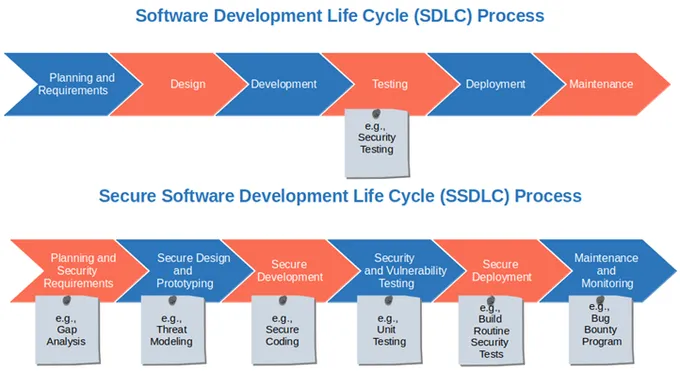

Secure by design on tarkvaratehnika kontseptsioon, mis tähendab, et tarkvara tooted ja võimalused on
loodud turvalisena algusest peale. See lähenemine erineb traditsioonilisest "turvalisus hiljem" meetodist, kus
turvalisus lisatakse alles hiljem. Turvalisus disainist alates on muutumas tarkvararengu standardiks, kus
turvalisus on arvestatud kõigil tasanditel, alates arhitektuuri disainist kuni testimiseni ja hoolduseni.
Põhimõtted:
Turvalisuse integreerimine kogu arendusprotsessi: Turvalisus on arvestatud kõigil arendusprotsessi
etappidel, mitte ainult lõpus.
Turvalisusest kui põhieeldusest: Turvalisus on käsitletud mitte ainult tehnilise funktsioonina, vaid ka
ärieesmärgina.
Turvalisuse testimine: Kasutatakse staatilist ja dünaamilist testimist, et leida ja parandada
turvalisusvigasid varakult.
Turvalisus vaikimisi: Tarkvara on turvaline vaikimisi, ilma lisakonfiguratsioonita.

Software development vs Secure by design development
Secure by design
Eelised
Puudused
Vähendab haavatavusi: Vigade parandamine algstaadiumis on oluliselt odavam kui hiljem.
Parandab stabiilsust: Turvalisus disainist alates tagab, et tarkvara on stabiilsem ja vähem häiretele
vastuvõtlik.
Lihtsustab kooskõla: Kergem on vastavus turvalisus- ja privaatsusnõuetele, mis vähendab bürokraatiat
ja karistusi.
Parandab mainet: Ettevõtted, mis prioriteetsevad turvalisust, on usaldusväärsed ja võidavad klientide
usalduse.
Kõrgemad arenduskulud: Turvalisus disainist alates võib tähendada kõrgemaid arenduskulusid, sest
turvalisuse integreerimine kõigisse arendusetappidesse võib olla aeganõudvam ja kulukam
Komplekssus: Turvalisusest kui põhieeldusest arvestamine võib tarkvaraprojekte komplekssemaks teha,
mis võib põhjustada arendusprotsessi aeglustumist
Vajadus spetsialistidele: Efektiivne turvalisus disainist alates nõuab spetsialistide oskusi, mis võib
olla kulukas ja võib piirata ettevõtete võimalusi
Regulatiivne koormus: Vastavus turvalisusstandarditele ja regulatsioonidele võib lisada bürokraatiat
ja kulutusi, eriti väiksematele ettevõtetele
Piiratud paindlikkus: Kui turvalisus on juba disaini osa, võib see piirata hilisemaid muudatusi või
uuendusi, sest need võivad rikkuda turvalisusskeem
NIST avaldas spetsiaalse väljaande
800-160, et anda juhised usaldusväärsete ja turvaliste süsteemide loomiseks. Dokument aitab ettevõtetel
uuesti läbi mõelda oma investeeringud süsteemide, komponentide, rakenduste ja võrkude nõuetesse, arhitektuuri,
disaini ja arendusse.
See ei ole rakendamise plaan, vaid pigem, nagu sissejuhatuses öeldakse, "kataloog või käsiraamat süsteemi
elutsükli protsesside süsteemitehnilise vaatenurga tuvastatud turbetulemuste saavutamiseks, jättes selle
inseneriorganisatsiooni kogemuste ja teadmiste hooleks. et teha kindlaks, mis on selle eesmärgi jaoks õige."
Kontekstualiseerimine ja organisatsiooni turvariskitaluvuse, asjatundlikkuse ja eelarvega kohanemine on
turvameeskonna ülesanne .